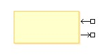
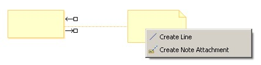
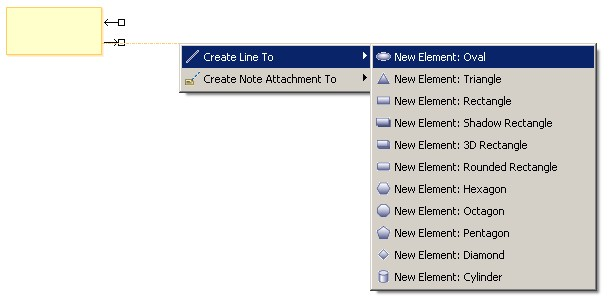
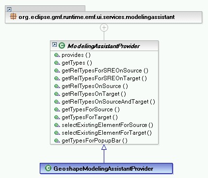
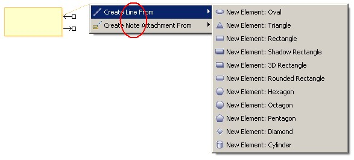
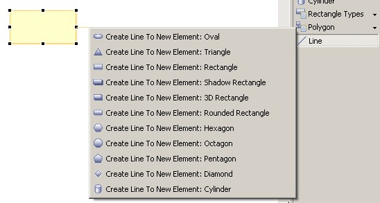
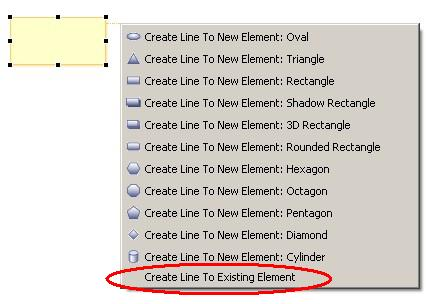
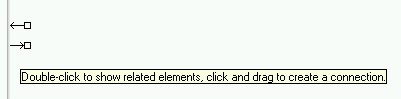

Tutorial: Connection Creation Assistants
|
Version: 1.0
|
Date: January 11, 2006
|
Contents
· Overview
· References
· Introduction
· Creating the Modeling
Assistant Provider
· Adding Support for
Connection Creation with Connection Handles
· Adding
Support for Connection Creation to an Unspecified Source or
Target
· Adding Support
for Selecting an Existing Element as the Source or Target
· Adding Support for
Showing Related Elements with the Connection Handles
· Summary
Overview
[back to top]
This tutorial provides the reader with the steps required to
contribute to options available on the connection handle popups and
to support connnection completion to an unknown source or
target.
References
[back to top]
This tutorial references the following extension point:
org.eclipse.gmf.runtime.emf.ui.modelingAssistantProviders
More information about this extension point can be found in the
SDK documentation.
This tutorial assumes the connections and shapes to be created can
already be created via a palette tool if such a tool existed. For
more information about supporting the creation of a shape and
connector see the following tutorials:
This tutorial uses the Geoshapes Example whose guide is available
here: Geometric
Shapes Example Guide.
Introduction
[back to top]
The connection assistant mechanisms to be described make it easier
for a user to create connections than the traditional palette
approach. These gestures require less mouse movement and mouse
clicks from the user. They can also provide contextual specific
suggestions as to what type of connection the user may wish to
create.
This tutorial will discuss two connection assistant mechanisms:
- Connection Handles
- Connection Completion to an Unspecified Target or Source
1. Connection Handles
Use Case:
The connection handles appear when hovering over a shape.

The user selects the incoming or outgoing connection handle and
drags the connection to another shape. Upon release of the mouse
button, a popup appears listing the possible connection typess that
can be created from which the user may select one.

Benefits:
- The user does not have to go back and forth to the palette to
create connections.
- The user can create a connection from source to target or from
target to source depending on what is most convenient based on
their current focus in the diagram.
- The diagram application can list the suggested or most common
connection types to be created based on the source and target thus
assisting the user in narrowing down the many choices often
available on the palette.
2. Connection Completion to an Unspecified Target or Source
Use Case:
The user begins a connection at the source or target shape using
either a connection handle or a palette connection tool. The user
releases the mouse button on empty diagram space and is presented
with the option to create a new element for the shape on the other
end of the connection or to use an existing element for this
shape.

Benefits:
- The user can create a connection to a shape not on the diagram
in one step.
We will use the Geometric Shapes Example to illustrate how to
contribute to the popups when using the connection handles or upon
connection completion to an unspecified target or source. To gain
familiarity with the Geometric Shapes Example, refer to the Geometric
Shapes Example Guide.
Creating the
Modeling Assistant Provider
[back to top]
The Modeling Assistant service is queried to get the list of
connection types and shape types when creation connections to an
unspecified source or target or when using the connection handles.
Therefore, the first step is to create a Modeling Assistant
provider. If your plug-in already has a Modeling Assistant provider
for another reason, then the same provider can be used.
Create the Modeling Assistant provider class. The abstract
ModelingAssistantProvider provides stubs for the methods in the
IModelingAssistantProvider so that each method need not be
implemented.

Create an extension of the
org.eclipse.gmf.runtime.emf.ui.modelingAssistantProviders extension
point.
<extension id="GeoshapeModelingAssistantProvider"
name="%ext.modelingAssistantProvider"
point="org.eclipse.gmf.runtime.emf.ui.modelingAssistantProviders">
<modelingAssistantProvider
class="org.eclipse.gmf.runtime.diagram.ui.geoshapes.internal.providers.GeoshapeModelingAssistantProvider">
<Priority name="Lowest"/> <object
class="org.eclipse.gmf.runtime.diagram.ui.geoshapes.internal.editparts.GeoShapeEditPart(org.eclipse.gmf.runtime.diagram.ui.geoshapes)"
id="GEOSHAPE"> </object> <context
elements="GEOSHAPE"> </context>
</modelingAssistantProvider> </extension>
Here is a brief description of the attributes in the
modelingAssistantProvider extension point:
| class |
The modeling assistant provider class that has been
created. |
| priority |
The priority of this modeling assistant provider. The Modeling
Assistant Service collects a list of types from all providers in
order of highest priority to lowest priority. |
| object definition |
Defines an object that will be used to describe the shapes that
this provider is interested in providing for. In this example, we
are defining a geoshape. |
| context |
Lists the elements defined above by their id to indicate that
this provider wishes to provide for these types. |
For more information, see the extension point documentation:
org.eclipse.gmf.runtime.emf.ui.modelingAssistantProviders
Adding
Support for Connection Creation with Connection Handles
[back to top]
The getRelTypesOnSourceAndTarget() method determines which
connection types can be created between a given source and target
when using the connection handles.
The getRelTypesOnSource() method determines which connection types
can be created between a given source and an unspecified target
shape using the outgoing connection handle.
This method is also needed to make the outgoing connection handle
support connection creation when the getRelTypesOnSourceAndTarget()
method is being implemented. That is, if there are no providers
that return types in the getRelTypesOnSource() method for a given
source, then the outgoing connection handle will not support
connection creation and may not even appear on that shape.

Similarly, the getRelTypesOnTarget() method determines which
connection types can be created between a given target and an
unspecified source shape using the incoming connection handle and
determines if the incoming connection handle should support
connection creation.
The code for the geoshapes example is quite simple. Since the line
connection type is bidirectional the result will be the same when
creating lines using the incoming or outgoing connection handle. If
the desired behavior was for only the outgoing connection handle to
appear, then getRelTypesOnTarget() would not be overridden.
public boolean provides(IOperation operation) { if (operation
instanceof GetRelTypesOnSourceOperation || operation instanceof
GetRelTypesOnTargetOperation || operation instanceof
GetRelTypesOnSourceAndTargetOperation) { return
super.provides(operation); } return false; } public List
getRelTypesOnSource(IAdaptable source) { return
Collections.singletonList(GeoshapeType.LINE); } public List
getRelTypesOnTarget(IAdaptable target) { return
Collections.singletonList(GeoshapeType.LINE); } public List
getRelTypesOnSourceAndTarget(IAdaptable source, IAdaptable target)
{ return Collections.singletonList(GeoshapeType.LINE); }
Notes:
- When showing the connection handles, the Modeling Assistant
service asks all providers to contribute to the list of types that
appear in the connection handle popups. In the case of the
Geoshapes example, the "Line" type is contributed by the
GeoshapeModelingAssistantProvider and the "Note Attachment" type is
contributed by the DiagramModelingAssistantProvider.
- Prior to showing the popup menus, each type is tested to see if
it possible to create the connection between the source and target.
If it is not possible to create the connection then that type will
not appear on the popup. For example, if it was impossible to
create a line between a geoshape circle and a cylinder, then even
though line is being contributed to the connection handle popup
between a circle and a cylinder it would not appear as an option
for the user to choose. This avoids having to duplicate the
enablement criteria in the Modeling Assistant provider that already
exists elsewhere (e.g. in the edit helpers or view providers).
Adding Support for
Connection Creation to an Unspecified Source or Target
[back to top]
The getTypesForTarget() and getTypesForSource() methods determines
the shape types that will appear when creating a connection to an
unspecified source or target using any connection creation
mechanism (e.g. a palette connection tool).

Add the shape types that can be created as the target type when
creating a connection from source to target using the
getTypesForTarget() method. This may be based on both the source
type and the connection type. Similarly, add the shape types that
can be created as the source type when creating a connection from
target to source using the getTypesForSource() method.
public List getTypesForSource(IAdaptable target, IElementType
relationshipType) { if (relationshipType.equals(GeoshapeType.LINE))
{ return GeoshapeType.getShapeTypes(); } return
Collections.EMPTY_LIST; } public List getTypesForTarget(IAdaptable
source, IElementType relationshipType) { if
(relationshipType.equals(GeoshapeType.LINE)) { return
GeoshapeType.getShapeTypes(); } return Collections.EMPTY_LIST; }
Notes:
- It is also necessary to update the provides() method
appropriately.
- When showing the shape types that can be created, the Modeling
Assistant service asks all providers to contribute to the list of
shape types.
- Prior to showing the popup menus, each type is tested to see if
it possible to create that shape type. If it is not possible to
create the shape then that type will not appear on the popup.
Adding Support for Selecting
an Existing Element as the Source or Target
[back to top]
Although the Geoshapes Example does not implement this, it is also
possible to create a connection to an existing element that may or
may not appear on the diagram.

By providing for the SelectExistingElementForTargetOperation, the
circled entry will appear when creating a connection to an
unspecified target. Similarly, by providing for the
SelectExistingElementForSourceOperation, the circled entry will
appear when creating a connection to an unspecified source. When
the user selects this entry, the selectExistingElementForSource()
method or selectExistingElementForTarget() method will be called in
the provider that provided for this operation with the highest
priority.
public EObject selectExistingElementForSource(IAdaptable target,
IElementType relationshipType) { // Show a dialog from which the
user can select an existing element. // Return the element. }
public EObject selectExistingElementForTarget(IAdaptable source,
IElementType relationshipType) { // Show a dialog from which the
user can select an existing element. // Return the element. }
Notes:
- It is also necessary to update the provides() method
appropriately.
Adding Support for Showing
Related Elements with the Connection Handles
[back to top]
Although the Geoshapes Example does not implement this as there is
no semantic model, it is also possible to support showing related
elements when double-clicking a connection handle.

By providing for the GetRelTypesForSREOnSourceOperation and
returning a list of types in the getRelTypesForSREOnSource()
method, the above tooltip will appear when hovering over the
outgoing connection handle. When the user double-clicks, the list
of types given in the getRelTypesForSREOnSource() method will
appear. After the user selects a type, the elements related to the
source shape in the manner selected will appear with connections to
the source shape.
The expanding of related shapes is not supported generically in
GMF. The client application must respond to the
org.eclipse.gmf.runtime.diagram.ui.requests.ShowRelatedElementsRequest
by returning the related elements.
Similarly, by providing for the GetRelTypesForSREOnTargetOperation
and returning a list of types in the getRelTypesForSREOnTarget()
method, this gesture will also be supported on the incoming
connection handle.
public List getRelTypesForSREOnSource(IAdaptable source) { //
return relationship types that could be expanded to show related
elements } public List getRelTypesForSREOnTarget(IAdaptable target)
{ // return relationship types that could be expanded to show
related elements }
Notes:
- It is also necessary to update the provides() method
appropriately.
- When showing the relationship types that can be expanded, the
Modeling Assistant service asks all providers to contribute to the
list of types.
Summary
[back to top]
In this tutorial, we did the following:
- Created the Modeling Assistant provider.
- Added support for connection creation with connection
handles.
- Added support for connection creation to an unspecified source
or target.
- Added support for selecting an existing element as the source
or target.
- Added support for showing related elements with the connection
handles.
Copyright
(c) 2000,2005 IBM Corporation and others. All Rights
Reserved.